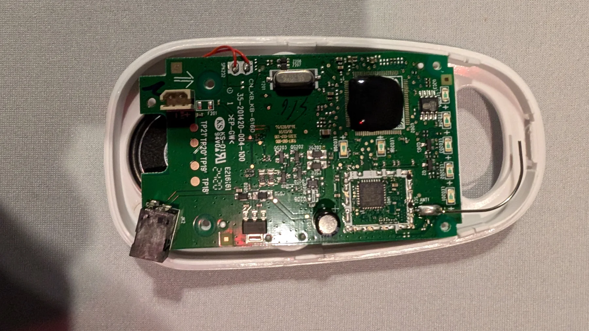
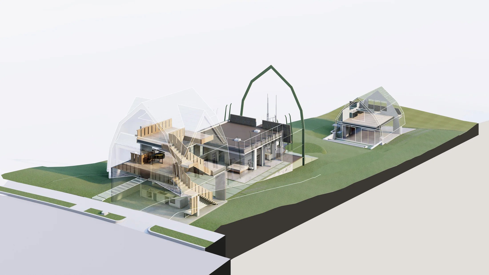
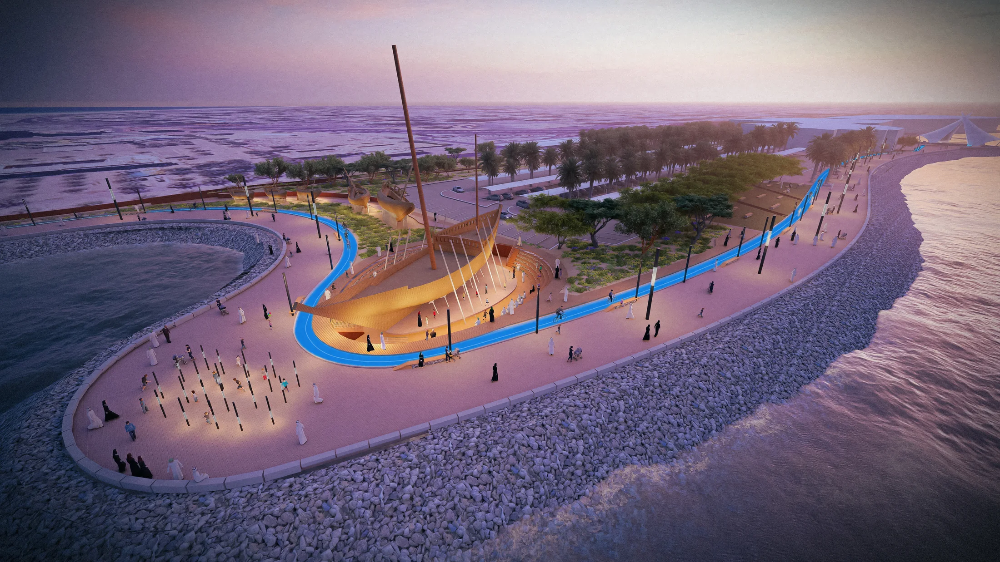
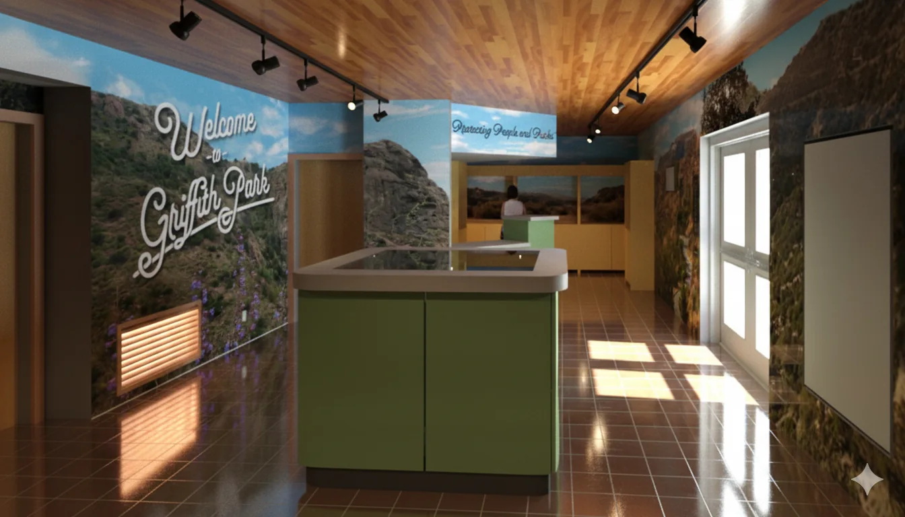
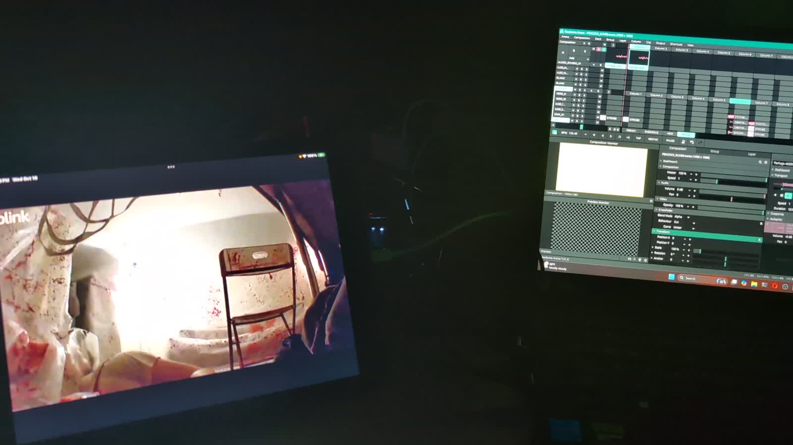
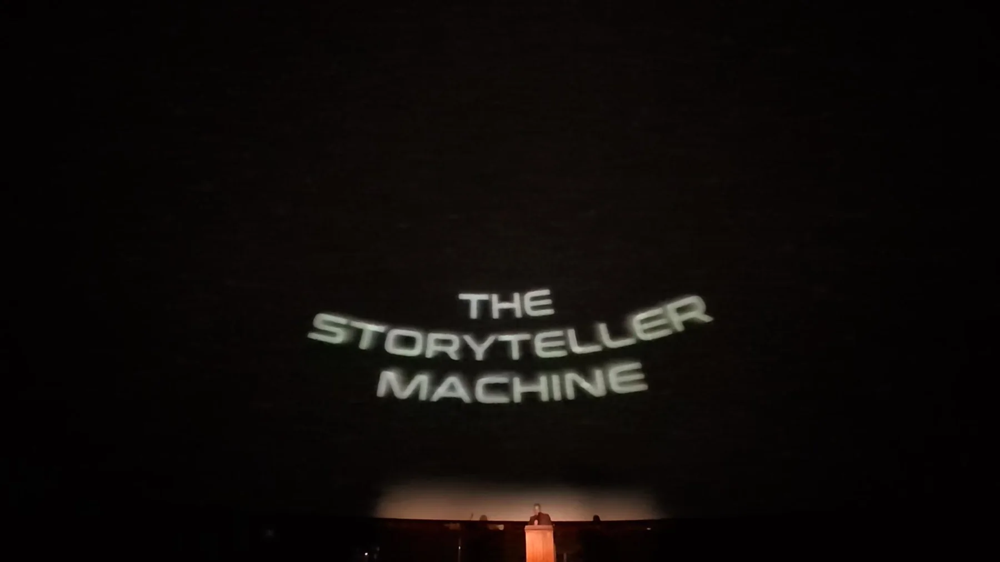
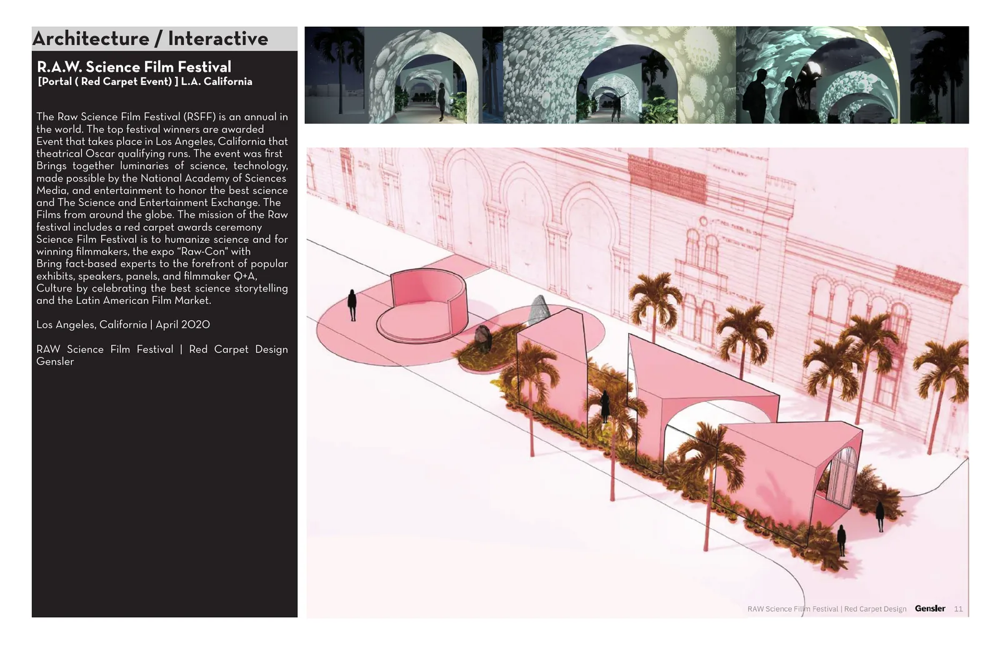
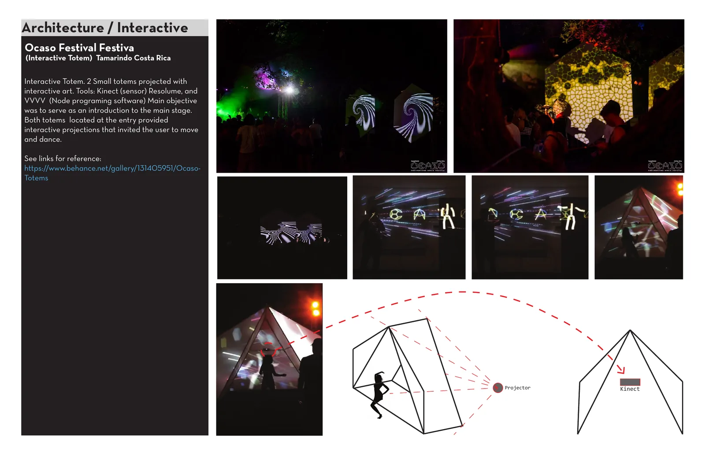

Space that people inhabit.
Systems that spaces inhabit.
I work across architecture, immersive environments, interactive media and computational design, from concept through documentation, fabrication, construction and onsite execution.

Architecture
Recent architectural work emphasizing full project participation: design, technical development, permitting, consultant coordination and construction administration.

800 Edgeware House
Craftsman infill residence on the last undeveloped lot in Angelino Heights, developed within a highly controlled historic context and carried into construction.

Kuwait Scientific Center | Dhow Landscape
Landscape and visitor circulation strategy for relocating and presenting historic dhow vessels as cultural objects within the Scientific Center grounds.

Griffith Park Visitor Center
Visitor center redesign combining exhibit surfaces, environmental graphics, map tables and opportunities for digital interpretation.
Experiential + Interactive
Spatial media, show systems and hands on prototyping. These projects combine architecture with sound, projection, sensing, programming and real time operation.

Peacock | Stanley Hotel
Technical execution for an immersive theatrical experience, including triggered audio devices, show control media and a custom battery powered IR illuminator for actors working in darkness.

The StoryTeller Machine
Speech recognition + AI image generation transform spoken narratives into evolving visual environments. The project expanded from gallery installation to fulldome presentation.

RAW Science Film Festival
Projected media portal and red carpet arrival sequence developed through architecture, environmental graphics and immersive projection.

Ocaso Festival | Interactive Totems
Kinect driven projection installations and experiments in responsive projected wayfinding.
Design Technology
Project specific tools created to answer architectural problems rather than use technology as an end in itself.
Generative Test Fit Tool
Rearranges predetermined residential unit layouts across a site using architectural, adjacency, orientation and planning rules.
Project Specific Climate Analysis
Combines site specific weather and geolocation data with spatial diagrams for early architectural decision making.
Open Source Rhino → Revit Bridge
Translates Rhino design intent into native or schedulable Revit geometry instead of relying on disconnected imported solids.